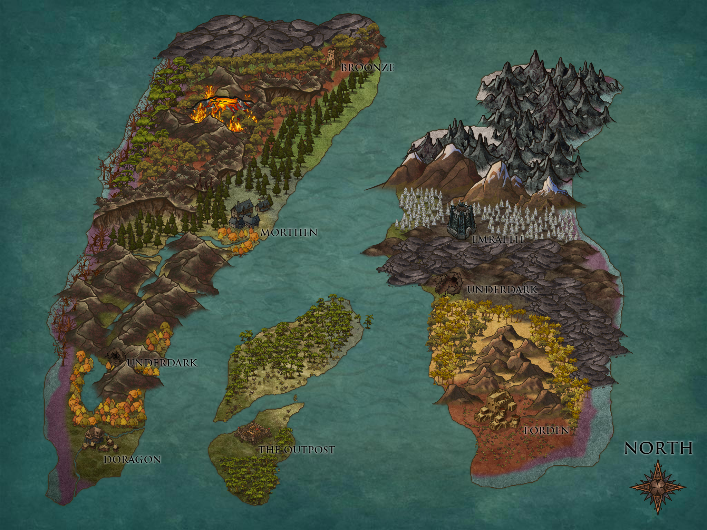
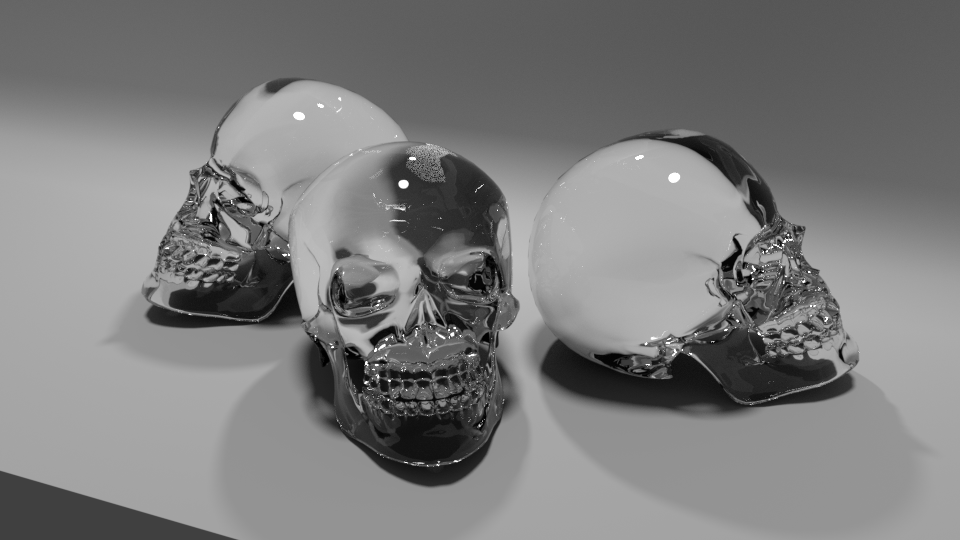
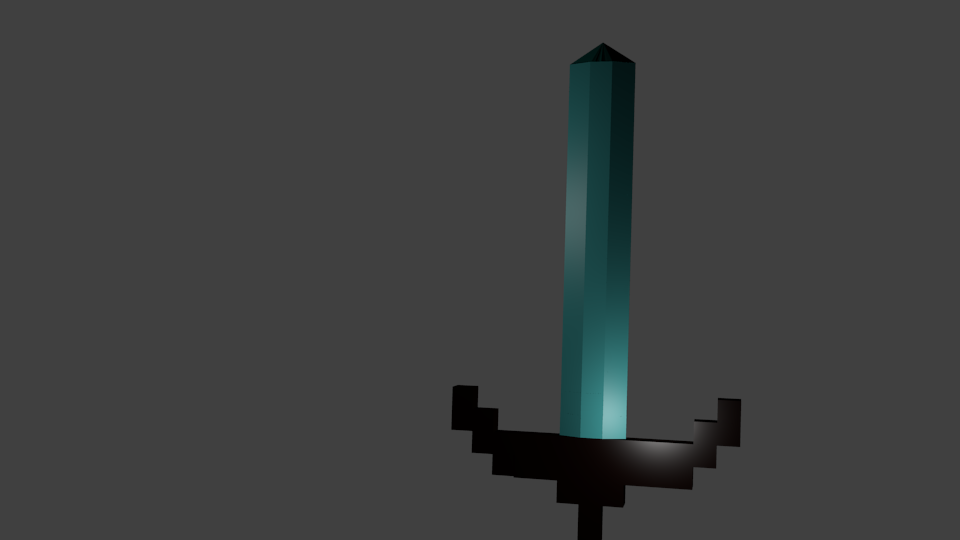
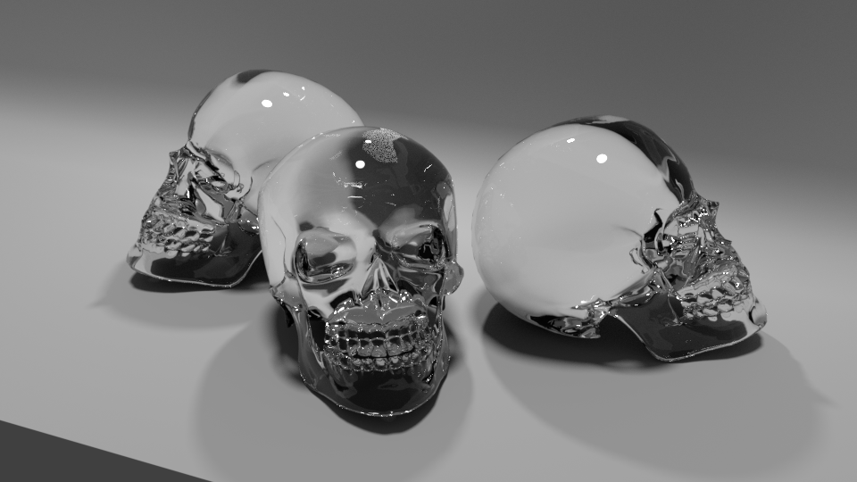
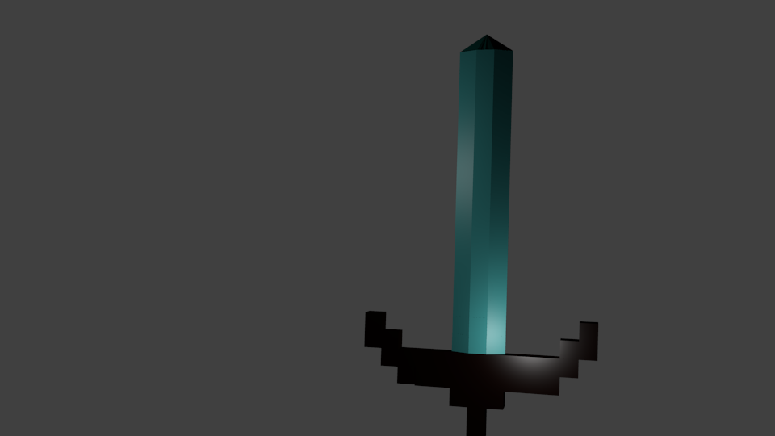
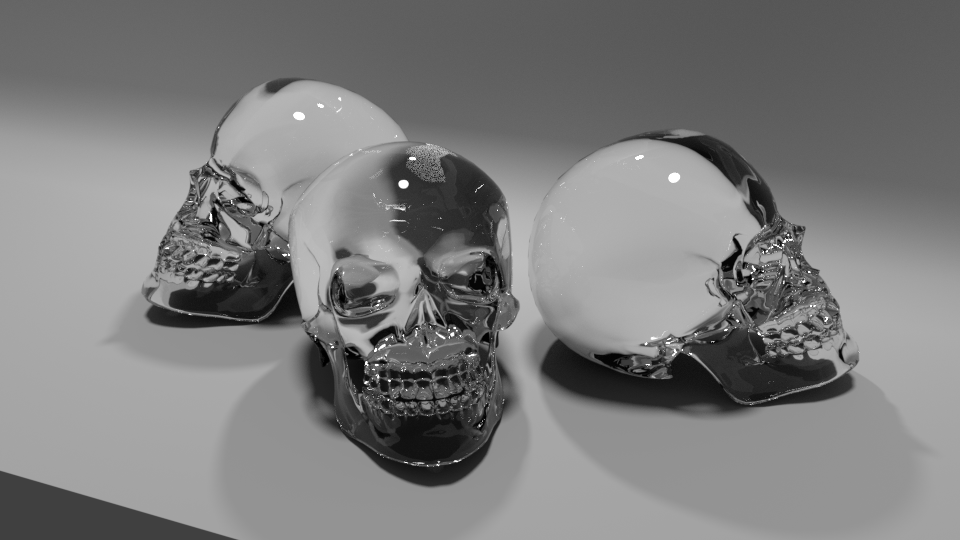
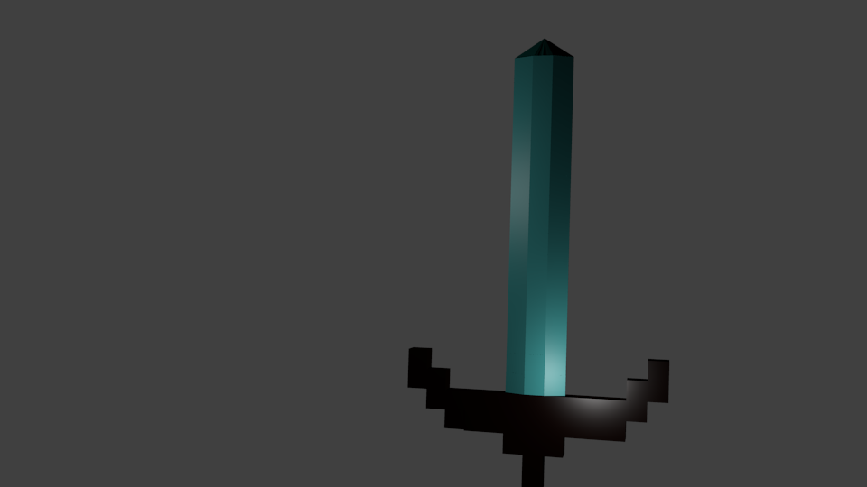

Dungeons and Dragon maps
Just some of the maps I'm actually proud of. For most of the maps I used a program called Inkarnate I would reccomened it to any new Dungeon Master who wants to make a hombrew world.



 




